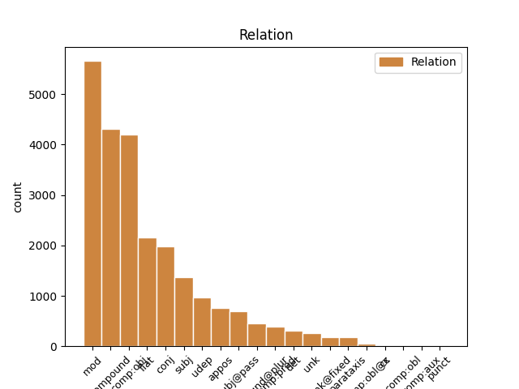
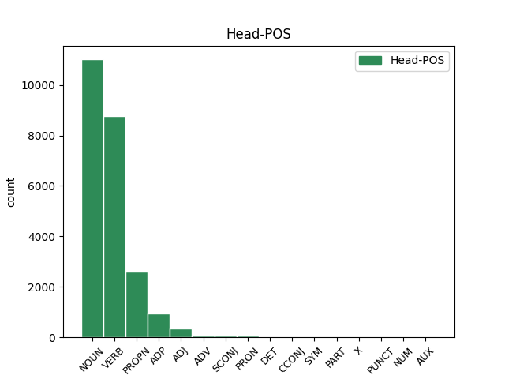
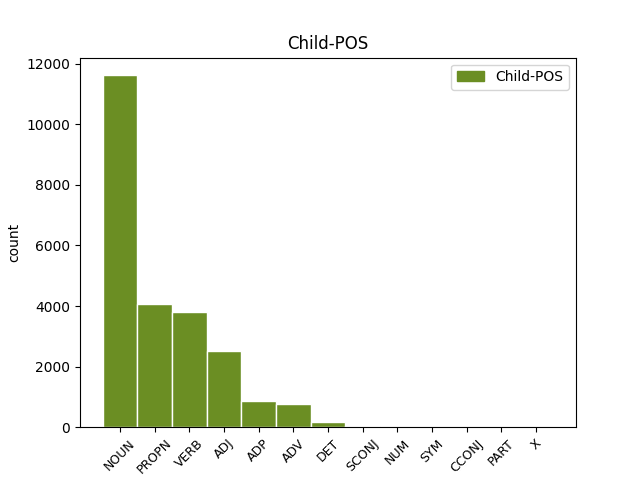

Distribution of features within this leaf



Agreement Rules sorted by frequency.
When the dependent token is None
1 Kecurigaan _ _ _ _ 0 _ _ _
2 ini _ _ _ _ 0 _ _ _
3 cukup _ _ _ _ 0 _ _ _
4 beralasan _ _ _ _ 0 _ _ _
5 karena _ _ _ _ 0 _ _ _
6 dalam _ _ _ _ 0 _ _ _
7 video _ _ _ _ 0 _ _ _
8 yang _ _ _ _ 0 _ _ _
9 diupload _ _ _ _ 0 _ _ _
10 Clarke _ _ _ _ 0 _ _ _
11 , _ _ _ _ 0 _ _ _
12 ia _ _ _ _ 0 _ _ _
13 menyebutkan _ _ _ _ 0 _ _ _
14 kalau _ _ _ _ 0 _ _ _
15 dalam _ _ _ _ 0 _ _ _
16 tahun _ _ _ _ 0 _ _ _
17 - _ _ _ _ 0 _ _ _
18 tahun _ _ _ _ 0 _ _ _
19 mendatang _ _ _ _ 0 _ _ _
20 , _ _ _ _ 0 _ _ _
21 film film NOUN NSD Number=Sing 0 _ _ _
22 - _ _ _ _ 0 _ _ _
23 film film NOUN NSD Number=Sing 21 compound@plur _ MorphInd=^film_NSD$
24 yang _ _ _ _ 0 _ _ _
25 dibuatnya _ _ _ _ 0 _ _ _
26 akan _ _ _ _ 0 _ _ _
27 segera _ _ _ _ 0 _ _ _
28 tayang _ _ _ _ 0 _ _ _
29 . _ _ _ _ 0 _ _ _
When the dependent token is None
1 Grimes _ _ _ _ 0 _ _ _
2 merupakan _ _ _ _ 0 _ _ _
3 sebuah _ _ _ _ 0 _ _ _
4 di _ _ _ _ 0 _ _ _
5 Dale _ _ _ _ 0 _ _ _
6 , _ _ _ _ 0 _ _ _
7 Alabama _ _ _ _ 0 _ _ _
8 , _ _ _ _ 0 _ _ _
9 Amerika amerika PROPN NSD Number=Sing 0 _ _ _
10 Serikat serikat PROPN NSD Number=Sing 9 flat _ MorphInd=^serikat_NSD$|SpaceAfter=No
11 . _ _ _ _ 0 _ _ _
When the dependent token is None
1 Jadi _ _ _ _ 0 _ _ _
2 dicoba _ _ _ _ 0 _ _ _
3 untuk _ _ _ _ 0 _ _ _
4 menjawab _ _ _ _ 0 _ _ _
5 pertanyaan-pertanyaan _ _ _ _ 0 _ _ _
6 seperti _ _ _ _ 0 _ _ _
7 kebutuhan _ _ _ _ 0 _ _ _
8 apa _ _ _ _ 0 _ _ _
9 yang _ _ _ _ 0 _ _ _
10 dicoba dicoba VERB VSP Number=Sing|Voice=Pass 0 _ _ _
11 dipuaskan dipuaskan VERB VSP Number=Sing|Voice=Pass 10 comp:pred _ MorphInd=^di+puas+kan_VSP$
12 oleh _ _ _ _ 0 _ _ _
13 seseorang _ _ _ _ 0 _ _ _
14 ? _ _ _ _ 0 _ _ _
When the dependent token is None
1 Bagaimana _ _ _ _ 0 _ _ _
2 caranya _ _ _ _ 0 _ _ _
3 balon _ _ _ _ 0 _ _ _
4 udara _ _ _ _ 0 _ _ _
5 berpindah _ _ _ _ 0 _ _ _
6 dari _ _ _ _ 0 _ _ _
7 satu _ _ _ _ 0 _ _ _
8 lokasi _ _ _ _ 0 _ _ _
9 ke _ _ _ _ 0 _ _ _
10 lokasi lokasi NOUN NSD Number=Sing 0 _ _ _
11 lain lain ADJ ASP Degree=Pos|Number=Sing 10 mod _ MorphInd=^lain_ASP$|SpaceAfter=No
12 ? _ _ _ _ 0 _ _ _
When the dependent token is None
1 Kecurigaan _ _ _ _ 0 _ _ _
2 ini _ _ _ _ 0 _ _ _
3 cukup _ _ _ _ 0 _ _ _
4 beralasan _ _ _ _ 0 _ _ _
5 karena _ _ _ _ 0 _ _ _
6 dalam _ _ _ _ 0 _ _ _
7 video _ _ _ _ 0 _ _ _
8 yang _ _ _ _ 0 _ _ _
9 diupload _ _ _ _ 0 _ _ _
10 Clarke _ _ _ _ 0 _ _ _
11 , _ _ _ _ 0 _ _ _
12 ia _ _ _ _ 0 _ _ _
13 menyebutkan _ _ _ _ 0 _ _ _
14 kalau _ _ _ _ 0 _ _ _
15 dalam dalam ADP ASP Degree=Pos|Number=Sing 28 udep _ MorphInd=^dalam_ASP$
16 tahun _ _ _ _ 0 _ _ _
17 - _ _ _ _ 0 _ _ _
18 tahun _ _ _ _ 0 _ _ _
19 mendatang _ _ _ _ 0 _ _ _
20 , _ _ _ _ 0 _ _ _
21 film _ _ _ _ 0 _ _ _
22 - _ _ _ _ 0 _ _ _
23 film _ _ _ _ 0 _ _ _
24 yang _ _ _ _ 0 _ _ _
25 dibuatnya _ _ _ _ 0 _ _ _
26 akan _ _ _ _ 0 _ _ _
27 segera _ _ _ _ 0 _ _ _
28 tayang tayang VERB VSA Number=Sing|Voice=Act 0 _ _ _
29 . _ _ _ _ 0 _ _ _
When the dependent token is None
1 Nigeria _ _ _ _ 0 _ _ _
2 juga _ _ _ _ 0 _ _ _
3 memiliki _ _ _ _ 0 _ _ _
4 ambar _ _ _ _ 0 _ _ _
5 , _ _ _ _ 0 _ _ _
6 yang _ _ _ _ 0 _ _ _
7 kira kira ADV VSA Number=Sing|Voice=Act 0 _ _ _
8 - _ _ _ _ 0 _ _ _
9 kira kira ADV VSA Number=Sing|Voice=Act 7 compound@plur _ MorphInd=^kira_VSA$
10 berumur _ _ _ _ 0 _ _ _
11 60 _ _ _ _ 0 _ _ _
12 juta _ _ _ _ 0 _ _ _
13 tahun _ _ _ _ 0 _ _ _
14 . _ _ _ _ 0 _ _ _
When the dependent token is None
1 Lari _ _ _ _ 0 _ _ _
2 sambung _ _ _ _ 0 _ _ _
3 atau _ _ _ _ 0 _ _ _
4 lari _ _ _ _ 0 _ _ _
5 estafet _ _ _ _ 0 _ _ _
6 adalah _ _ _ _ 0 _ _ _
7 salah salah DET ASP Degree=Pos|Number=Sing 9 det _ MorphInd=^salah_ASP$
8 satu _ _ _ _ 0 _ _ _
9 lomba lomba NOUN NSD Number=Sing 0 _ _ _
10 lari _ _ _ _ 0 _ _ _
11 pada _ _ _ _ 0 _ _ _
12 perlombaan _ _ _ _ 0 _ _ _
13 atletik _ _ _ _ 0 _ _ _
14 yang _ _ _ _ 0 _ _ _
15 dilaksanakan _ _ _ _ 0 _ _ _
16 secara _ _ _ _ 0 _ _ _
17 bergantian _ _ _ _ 0 _ _ _
18 atau _ _ _ _ 0 _ _ _
19 beranting _ _ _ _ 0 _ _ _
20 . _ _ _ _ 0 _ _ _
When the dependent token is None
1 Meningkatnya _ _ _ _ 0 _ _ _
2 popularitas _ _ _ _ 0 _ _ _
3 Ibu _ _ _ _ 0 _ _ _
4 Ratu _ _ _ _ 0 _ _ _
5 dari _ _ _ _ 0 _ _ _
6 Barat _ _ _ _ 0 _ _ _
7 , _ _ _ _ 0 _ _ _
8 serta _ _ _ _ 0 _ _ _
9 kepercayaan _ _ _ _ 0 _ _ _
10 bahwa _ _ _ _ 0 _ _ _
11 dirinya _ _ _ _ 0 _ _ _
12 adalah _ _ _ _ 0 _ _ _
13 pemberi _ _ _ _ 0 _ _ _
14 kekayaan _ _ _ _ 0 _ _ _
15 , _ _ _ _ 0 _ _ _
16 umur _ _ _ _ 0 _ _ _
17 panjang _ _ _ _ 0 _ _ _
18 , _ _ _ _ 0 _ _ _
19 dan _ _ _ _ 0 _ _ _
20 kebahagiaan _ _ _ _ 0 _ _ _
21 abadi _ _ _ _ 0 _ _ _
22 dimulai dimulai VERB VSP Number=Sing|Voice=Pass 0 _ _ _
23 semenjak _ _ _ _ 0 _ _ _
24 sekitar _ _ _ _ 0 _ _ _
25 abad _ _ _ _ 0 _ _ _
26 ke _ _ _ _ 0 _ _ _
27 dua _ _ _ _ 0 _ _ _
28 SM _ _ _ _ 0 _ _ _
29 , _ _ _ _ 0 _ _ _
30 saat saat SCONJ NSD Number=Sing 22 mod _ MorphInd=^saat_NSD$
31 wilayah _ _ _ _ 0 _ _ _
32 China _ _ _ _ 0 _ _ _
33 bagian _ _ _ _ 0 _ _ _
34 Utara _ _ _ _ 0 _ _ _
35 dan _ _ _ _ 0 _ _ _
36 Barat _ _ _ _ 0 _ _ _
37 dikenal _ _ _ _ 0 _ _ _
38 lebih _ _ _ _ 0 _ _ _
39 baik _ _ _ _ 0 _ _ _
40 karena _ _ _ _ 0 _ _ _
41 dibukanya _ _ _ _ 0 _ _ _
42 Jalur _ _ _ _ 0 _ _ _
43 Sutra _ _ _ _ 0 _ _ _
44 . _ _ _ _ 0 _ _ _
When the dependent token is None
1 Satu _ _ _ _ 0 _ _ _
2 individu _ _ _ _ 0 _ _ _
3 dilaporkan _ _ _ _ 0 _ _ _
4 memanjat _ _ _ _ 0 _ _ _
5 dinding dinding NOUN NSD Number=Sing 0 _ _ _
6 setinggi _ _ _ _ 0 _ _ _
7 40 _ _ _ _ 0 _ _ _
8 sentimeter sentimeter NUM NSD Number=Sing|NumType=Card 5 mod _ MorphInd=^sentimeter_NSD$
9 ( _ _ _ _ 0 _ _ _
10 16 _ _ _ _ 0 _ _ _
11 di _ _ _ _ 0 _ _ _
12 ) _ _ _ _ 0 _ _ _
13 dalam _ _ _ _ 0 _ _ _
14 enam _ _ _ _ 0 _ _ _
15 belas _ _ _ _ 0 _ _ _
16 hari _ _ _ _ 0 _ _ _
17 kelahiran _ _ _ _ 0 _ _ _
18 , _ _ _ _ 0 _ _ _
19 yang _ _ _ _ 0 _ _ _
20 mencerminkan _ _ _ _ 0 _ _ _
21 tinggi _ _ _ _ 0 _ _ _
22 tingkatan _ _ _ _ 0 _ _ _
23 kelincahan _ _ _ _ 0 _ _ _
24 fisik _ _ _ _ 0 _ _ _
25 sejak _ _ _ _ 0 _ _ _
26 dini _ _ _ _ 0 _ _ _
27 . _ _ _ _ 0 _ _ _
When the dependent token is None
1 Xabi _ _ _ _ 0 _ _ _
2 Alonso _ _ _ _ 0 _ _ _
3 Olano _ _ _ _ 0 _ _ _
4 ( _ _ _ _ 0 _ _ _
5 ) _ _ _ _ 0 _ _ _
6 adalah _ _ _ _ 0 _ _ _
7 pemain _ _ _ _ 0 _ _ _
8 sepak _ _ _ _ 0 _ _ _
9 bola _ _ _ _ 0 _ _ _
10 bertinggi _ _ _ _ 0 _ _ _
11 tubuh tubuh NOUN NSD Number=Sing 0 _ _ _
12 183 _ _ _ _ 0 _ _ _
13 cm cm SYM NSD Number=Sing 11 compound _ MorphInd=^cm_NSD$
14 asal _ _ _ _ 0 _ _ _
15 Spanyol _ _ _ _ 0 _ _ _
16 yang _ _ _ _ 0 _ _ _
17 bermain _ _ _ _ 0 _ _ _
18 di _ _ _ _ 0 _ _ _
19 klub _ _ _ _ 0 _ _ _
20 Real _ _ _ _ 0 _ _ _
21 Madrid _ _ _ _ 0 _ _ _
22 . _ _ _ _ 0 _ _ _
When the dependent token is None
1 Lalu lalu CCONJ ASP Degree=Pos|Number=Sing 9 cc _ MorphInd=^lalu_ASP$
2 Hemor _ _ _ _ 0 _ _ _
3 dan _ _ _ _ 0 _ _ _
4 Sikhem _ _ _ _ 0 _ _ _
5 , _ _ _ _ 0 _ _ _
6 anak _ _ _ _ 0 _ _ _
7 Hemor _ _ _ _ 0 _ _ _
8 , _ _ _ _ 0 _ _ _
9 menyetujui mensetujui VERB VSA Number=Sing|Voice=Act 0 _ _ _
10 usul _ _ _ _ 0 _ _ _
11 mereka _ _ _ _ 0 _ _ _
12 . _ _ _ _ 0 _ _ _
When the dependent token is None
1 Berdasar berdasar PART VSA Number=Sing|Voice=Act 2 unk _ MorphInd=^ber+dasar_VSA$
2 referensi referensi NOUN NSD Number=Sing 0 _ _ _
3 dari _ _ _ _ 0 _ _ _
4 Dinas _ _ _ _ 0 _ _ _
5 Pariwisata _ _ _ _ 0 _ _ _
6 dan _ _ _ _ 0 _ _ _
7 Kebudayaan _ _ _ _ 0 _ _ _
8 Kabupaten _ _ _ _ 0 _ _ _
9 Sumenep _ _ _ _ 0 _ _ _
10 menyebutkan _ _ _ _ 0 _ _ _
11 Syeh _ _ _ _ 0 _ _ _
12 Dukun _ _ _ _ 0 _ _ _
13 ini _ _ _ _ 0 _ _ _
14 adalah _ _ _ _ 0 _ _ _
15 pembantu _ _ _ _ 0 _ _ _
16 Anggasuto _ _ _ _ 0 _ _ _
17 yang _ _ _ _ 0 _ _ _
18 berasal _ _ _ _ 0 _ _ _
19 dari _ _ _ _ 0 _ _ _
20 Banten _ _ _ _ 0 _ _ _
21 . _ _ _ _ 0 _ _ _
When the dependent token is None
1 Rock _ _ _ _ 0 _ _ _
2 telah _ _ _ _ 0 _ _ _
3 dikritik _ _ _ _ 0 _ _ _
4 oleh _ _ _ _ 0 _ _ _
5 beberapa _ _ _ _ 0 _ _ _
6 tokoh _ _ _ _ 0 _ _ _
7 agama _ _ _ _ 0 _ _ _
8 Kristen _ _ _ _ 0 _ _ _
9 , _ _ _ _ 0 _ _ _
10 yang _ _ _ _ 0 _ _ _
11 telah _ _ _ _ 0 _ _ _
12 dikutuk dikutuk VERB VSP Number=Sing|Voice=Pass 0 _ _ _
13 sebagai _ _ _ _ 0 _ _ _
14 tidak _ _ _ _ 0 _ _ _
15 bermoral _ _ _ _ 0 _ _ _
16 , _ _ _ _ 0 _ _ _
17 anti anti X ASP Degree=Pos|Number=Sing 12 udep _ MorphInd=^anti_ASP$
18 - _ _ _ _ 0 _ _ _
19 Kristen _ _ _ _ 0 _ _ _
20 dan _ _ _ _ 0 _ _ _
21 bahkan _ _ _ _ 0 _ _ _
22 setan _ _ _ _ 0 _ _ _
23 . _ _ _ _ 0 _ _ _
24 Namun _ _ _ _ 0 _ _ _
25 , _ _ _ _ 0 _ _ _
26 Christian _ _ _ _ 0 _ _ _
27 rock _ _ _ _ 0 _ _ _
28 mulai _ _ _ _ 0 _ _ _
29 berkembang _ _ _ _ 0 _ _ _
30 pada _ _ _ _ 0 _ _ _
31 akhir _ _ _ _ 0 _ _ _
32 1960 _ _ _ _ 0 _ _ _
33 - _ _ _ _ 0 _ _ _
34 an _ _ _ _ 0 _ _ _
35 , _ _ _ _ 0 _ _ _
36 terutama _ _ _ _ 0 _ _ _
37 muncul _ _ _ _ 0 _ _ _
38 pada _ _ _ _ 0 _ _ _
39 awal _ _ _ _ 0 _ _ _
40 gerakan _ _ _ _ 0 _ _ _
41 Yesus _ _ _ _ 0 _ _ _
42 di _ _ _ _ 0 _ _ _
43 California _ _ _ _ 0 _ _ _
44 Selatan _ _ _ _ 0 _ _ _
45 , _ _ _ _ 0 _ _ _
46 dan _ _ _ _ 0 _ _ _
47 muncul _ _ _ _ 0 _ _ _
48 sebagai _ _ _ _ 0 _ _ _
49 sub _ _ _ _ 0 _ _ _
50 - _ _ _ _ 0 _ _ _
51 genre _ _ _ _ 0 _ _ _
52 pada _ _ _ _ 0 _ _ _
53 1970 _ _ _ _ 0 _ _ _
54 - _ _ _ _ 0 _ _ _
55 an _ _ _ _ 0 _ _ _
56 dengan _ _ _ _ 0 _ _ _
57 artis _ _ _ _ 0 _ _ _
58 seperti _ _ _ _ 0 _ _ _
59 Larry _ _ _ _ 0 _ _ _
60 Norman _ _ _ _ 0 _ _ _
61 , _ _ _ _ 0 _ _ _
62 yang _ _ _ _ 0 _ _ _
63 biasanya _ _ _ _ 0 _ _ _
64 dianggap _ _ _ _ 0 _ _ _
65 sebagai _ _ _ _ 0 _ _ _
66 " _ _ _ _ 0 _ _ _
67 bintang _ _ _ _ 0 _ _ _
68 " _ _ _ _ 0 _ _ _
69 besar _ _ _ _ 0 _ _ _
70 pertama _ _ _ _ 0 _ _ _
71 dari _ _ _ _ 0 _ _ _
72 Christian _ _ _ _ 0 _ _ _
73 rock _ _ _ _ 0 _ _ _
74 . _ _ _ _ 0 _ _ _
75 Genre _ _ _ _ 0 _ _ _
76 ini _ _ _ _ 0 _ _ _
77 sangat _ _ _ _ 0 _ _ _
78 populer _ _ _ _ 0 _ _ _
79 di _ _ _ _ 0 _ _ _
80 Amerika _ _ _ _ 0 _ _ _
81 Serikat _ _ _ _ 0 _ _ _
82 . _ _ _ _ 0 _ _ _
Disagree Examples:
1 `` _ _ _ _ 0 _ _ _
2 Hai _ _ _ _ 0 _ _ _
3 Muhammad _ _ _ _ 0 _ _ _
4 , _ _ _ _ 0 _ _ _
5 mengapa _ _ _ _ 0 _ _ _
6 kamu _ _ _ _ 0 _ _ _
7 mengharamkan _ _ _ _ 0 _ _ _
8 apa _ _ _ _ 0 _ _ _
9 yang _ _ _ _ 0 _ _ _
10 Allah _ _ _ _ 0 _ _ _
11 menghalalkannya _ _ _ _ 0 _ _ _
12 bagimu _ _ _ _ 0 _ _ _
13 ; _ _ _ _ 0 _ _ _
14 kamu _ _ _ _ 0 _ _ _
15 mencari _ _ _ _ 0 _ _ _
16 kesenangan _ _ _ _ 0 _ _ _
17 hati hati NOUN NSD Number=Sing 0 _ _ _
18 istri-istrimu istri NOUN NPD+PS2 Number=Plur|Number[psor]=Sing|Person[psor]=2 17 compound _ MorphInd=^istri_NPD+kamu_PS2$|SpaceAfter=No
19 ? _ _ _ _ 0 _ _ _
1 Apabila _ _ _ _ 0 _ _ _
2 didengarnya _ _ _ _ 0 _ _ _
3 segala _ _ _ _ 0 _ _ _
4 kedursilaan _ _ _ _ 0 _ _ _
5 yang _ _ _ _ 0 _ _ _
6 dilakukan dilakukan VERB VSP Number=Sing|Voice=Pass 0 _ _ _
7 anak-anaknya anak NOUN NPD+PS3 Number=Plur|Number[psor]=Sing|Person[psor]=3 6 udep _ MorphInd=^anak_NPD+dia_PS3$|SpaceAfter=No
8 , _ _ _ _ 0 _ _ _
9 berkatalah _ _ _ _ 0 _ _ _
10 ia _ _ _ _ 0 _ _ _
11 kepada _ _ _ _ 0 _ _ _
12 mereka _ _ _ _ 0 _ _ _
13 : _ _ _ _ 0 _ _ _
14 `` _ _ _ _ 0 _ _ _
15 Mengapa _ _ _ _ 0 _ _ _
16 kamu _ _ _ _ 0 _ _ _
17 melakukan _ _ _ _ 0 _ _ _
18 hal-hal _ _ _ _ 0 _ _ _
19 yang _ _ _ _ 0 _ _ _
20 begitu _ _ _ _ 0 _ _ _
21 , _ _ _ _ 0 _ _ _
22 sehingga _ _ _ _ 0 _ _ _
23 kudengar _ _ _ _ 0 _ _ _
24 dari _ _ _ _ 0 _ _ _
25 segenap _ _ _ _ 0 _ _ _
26 bangsa _ _ _ _ 0 _ _ _
27 ini _ _ _ _ 0 _ _ _
28 tentang _ _ _ _ 0 _ _ _
29 perbuatan-perbuatanmu _ _ _ _ 0 _ _ _
30 yang _ _ _ _ 0 _ _ _
31 jahat _ _ _ _ 0 _ _ _
32 itu _ _ _ _ 0 _ _ _
33 ? _ _ _ _ 0 _ _ _
1 Apabila _ _ _ _ 0 _ _ _
2 didengarnya _ _ _ _ 0 _ _ _
3 segala _ _ _ _ 0 _ _ _
4 kedursilaan _ _ _ _ 0 _ _ _
5 yang _ _ _ _ 0 _ _ _
6 dilakukan _ _ _ _ 0 _ _ _
7 anak-anaknya _ _ _ _ 0 _ _ _
8 , _ _ _ _ 0 _ _ _
9 berkatalah _ _ _ _ 0 _ _ _
10 ia _ _ _ _ 0 _ _ _
11 kepada _ _ _ _ 0 _ _ _
12 mereka _ _ _ _ 0 _ _ _
13 : _ _ _ _ 0 _ _ _
14 `` _ _ _ _ 0 _ _ _
15 Mengapa _ _ _ _ 0 _ _ _
16 kamu _ _ _ _ 0 _ _ _
17 melakukan menlakukan VERB VSA Number=Sing|Voice=Act 0 _ _ _
18 hal-hal hal NOUN NPD Number=Plur 17 comp:obj _ MorphInd=^hal_NPD$
19 yang _ _ _ _ 0 _ _ _
20 begitu _ _ _ _ 0 _ _ _
21 , _ _ _ _ 0 _ _ _
22 sehingga _ _ _ _ 0 _ _ _
23 kudengar _ _ _ _ 0 _ _ _
24 dari _ _ _ _ 0 _ _ _
25 segenap _ _ _ _ 0 _ _ _
26 bangsa _ _ _ _ 0 _ _ _
27 ini _ _ _ _ 0 _ _ _
28 tentang _ _ _ _ 0 _ _ _
29 perbuatan-perbuatanmu _ _ _ _ 0 _ _ _
30 yang _ _ _ _ 0 _ _ _
31 jahat _ _ _ _ 0 _ _ _
32 itu _ _ _ _ 0 _ _ _
33 ? _ _ _ _ 0 _ _ _
1 Apabila _ _ _ _ 0 _ _ _
2 didengarnya _ _ _ _ 0 _ _ _
3 segala _ _ _ _ 0 _ _ _
4 kedursilaan _ _ _ _ 0 _ _ _
5 yang _ _ _ _ 0 _ _ _
6 dilakukan _ _ _ _ 0 _ _ _
7 anak-anaknya _ _ _ _ 0 _ _ _
8 , _ _ _ _ 0 _ _ _
9 berkatalah _ _ _ _ 0 _ _ _
10 ia _ _ _ _ 0 _ _ _
11 kepada _ _ _ _ 0 _ _ _
12 mereka _ _ _ _ 0 _ _ _
13 : _ _ _ _ 0 _ _ _
14 `` _ _ _ _ 0 _ _ _
15 Mengapa _ _ _ _ 0 _ _ _
16 kamu _ _ _ _ 0 _ _ _
17 melakukan _ _ _ _ 0 _ _ _
18 hal-hal _ _ _ _ 0 _ _ _
19 yang _ _ _ _ 0 _ _ _
20 begitu _ _ _ _ 0 _ _ _
21 , _ _ _ _ 0 _ _ _
22 sehingga _ _ _ _ 0 _ _ _
23 kudengar _ _ _ _ 0 _ _ _
24 dari _ _ _ _ 0 _ _ _
25 segenap _ _ _ _ 0 _ _ _
26 bangsa _ _ _ _ 0 _ _ _
27 ini _ _ _ _ 0 _ _ _
28 tentang tentang ADP VSA Number=Sing|Voice=Act 0 _ _ _
29 perbuatan-perbuatanmu perbuatan NOUN NPD+PS2 Number=Plur|Number[psor]=Sing|Person[psor]=2 28 comp:obj _ MorphInd=^per+buat+an_NPD+kamu_PS2$
30 yang _ _ _ _ 0 _ _ _
31 jahat _ _ _ _ 0 _ _ _
32 itu _ _ _ _ 0 _ _ _
33 ? _ _ _ _ 0 _ _ _
1 Apabila _ _ _ _ 0 _ _ _
2 didengarnya _ _ _ _ 0 _ _ _
3 segala _ _ _ _ 0 _ _ _
4 kedursilaan _ _ _ _ 0 _ _ _
5 yang _ _ _ _ 0 _ _ _
6 dilakukan _ _ _ _ 0 _ _ _
7 anak-anaknya _ _ _ _ 0 _ _ _
8 , _ _ _ _ 0 _ _ _
9 berkatalah _ _ _ _ 0 _ _ _
10 ia _ _ _ _ 0 _ _ _
11 kepada _ _ _ _ 0 _ _ _
12 mereka _ _ _ _ 0 _ _ _
13 : _ _ _ _ 0 _ _ _
14 `` _ _ _ _ 0 _ _ _
15 Mengapa _ _ _ _ 0 _ _ _
16 kamu _ _ _ _ 0 _ _ _
17 melakukan _ _ _ _ 0 _ _ _
18 hal-hal _ _ _ _ 0 _ _ _
19 yang _ _ _ _ 0 _ _ _
20 begitu _ _ _ _ 0 _ _ _
21 , _ _ _ _ 0 _ _ _
22 sehingga _ _ _ _ 0 _ _ _
23 kudengar _ _ _ _ 0 _ _ _
24 dari _ _ _ _ 0 _ _ _
25 segenap _ _ _ _ 0 _ _ _
26 bangsa _ _ _ _ 0 _ _ _
27 ini _ _ _ _ 0 _ _ _
28 tentang _ _ _ _ 0 _ _ _
29 perbuatan-perbuatanmu perbuatan NOUN NPD+PS2 Number=Plur|Number[psor]=Sing|Person[psor]=2 0 _ _ _
30 yang _ _ _ _ 0 _ _ _
31 jahat jahat ADJ ASP Degree=Pos|Number=Sing 29 mod _ MorphInd=^jahat_ASP$
32 itu _ _ _ _ 0 _ _ _
33 ? _ _ _ _ 0 _ _ _